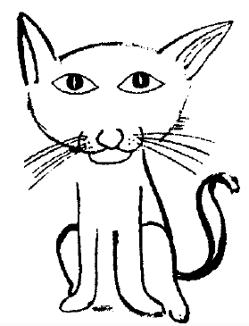

Suat Ferid sabah uyandığı zaman yanı başındaki nefis yaratığa inanmayan gözlerle baktı. Kız çıplak uyumuştu. Üzerinde sadece omuzlarına kadar çekili çarşaf vardı ve o kadifemsi omuzlar üşüyor olmalıydı. Eline geçirdiği yeşil gömleğini Anette’in üzerine örttü. Şeyhin deyimi ile harmandanası bedenini örtmeye yarayan gömlek, kızın neredeyse topuklarına kadar inmişti. Bu işi yaparken gömleğin cebinden küçük bir şey halının üstüne düştü. Suat eğilip aldı. Minik bir altın paraydı. Biraz bocaladıktan sonra aklına şeyhin Işrak Semahı geldi.
Başını iki yana sallayarak sessizce kalktı, duşa girdi. Orada aklına zavallı Fendi geldi, acaba tekrar sokaklara salınsa, kasabın filan önünde daha çok yiyecek bulabilir miydi? Çıkınca hayvanı katın hemen her tarafında aradı. Yoktu. Şimdiye kadar arandığı tek bir defa bile bulunamamıştı. Suat Ferid bu sefer azimliydi. Sistematik olarak alt kattan başladı. Yaşadığı katı yeniden aradı ve kitabı aldığı zamandan beri çıkmadığı, daha çok, az kullandığı kitaplarla dolu olan üst kata çıktı. Oradaki araştırma da herhangi bir sonuç vermedi. “Ulan bu kerata kedi mi hepimizi kuruyor nedir?" diye dalga geçti.
Sonra Fendi’nin Duvduvani ile aynı gün, aynı saat içinde eve geldiğini hatırladı. Çok mu gerekiyordu Anette’e yalan söylemesi asansörde? Başka şeyleri de hatırladı... Kedinin yemyeşil gözleri ile Hami’ninkiler aynıydı. Kedinin simsiyah tüyleri ile Hami ve hatta Popeye’in saçtan aynı parlaklıkta idi. Popeye’in gözlerini hatırlamıyordu. Kendini ne kadar zorlarsa zorlasın bulamadı. Anette’e sormak için zihnî bir not aldı. “Hadi canım sen de!" dedi ama şu son dört beş günde yaşadıkları, gördükleri, “gerçek" diye tasnif edilen ve “yalan" diye damgalanan arasındaki sınırın çok ince olduğunu gösteriyordu. “Gerçek” onu algılayana ve hangi vesait ile algılandığına göre oldukça farklı kılıklara bürünebiliyordu. Bazen de çok ortalıkta, çok çıplak ve yalın olmasına rağmen kimse gerçeği görmek ve anlamak istemiyor, onu zorla başka kılığa sokmaya çalışıyorlardı. Eli boş ve düşünceli aşağıya indi. Yatak odasına gitti. Anette uyanmıştı, yani yatakta yoktu. Onu da Fendi gibi evin içinde aramayacağına göre, salona gidip oturdu.
“Evet, ortada olan gerçek yerine başka bir şeyler aradığımız gibi, var olan gerçekten de kaçındığımız oluyor, niye ben aldığım kitaptan bu kadar gündür tek bir satır bile okumadım?”
Tasviri olmasaydı, başka bir kitap olsaydı, belki şöyle bir karıştırmıştı, bundan ise başından beri uzak durmuş, kendisi ne diyor anlamaya çalışmak yerine, başkaları bunun hakkında ne diyor, ona bakmış, kitabı okumak yerine kendi yalanları için kullanmıştı. Anette hâlâ yoktu. Belki bir eşyasını almak için karşıya gitmiştir diye düşündü, son dört buçuk yılın alışkanlığıyla gözünü kapı dürbününe dayayıp dakikalarca bekledi, kapıyı açıp dışarı çıktı, geri döndü, banyolara baktı kimseyi bulamadı.
Canı pek çok sıkılmaya başladı. Masanın başına oturdu. Tasviri Efendi'yi açtı. Güneş ışığına tuttu, kafasında biçtiği dönemi göz önünde tutarak su damgalarına bakmaya başladı. Bu zırdeli kitapta insan canının çektiği sayfayı da okuyamıyordu, pardon canı ne çekerse “okuyor” da başkasının yazdığı herhangi bir şeyi okuyamıyordu, doğru veya yalan ayrımı yapmak istemiyorsa tabii herhangi bir sayfadan başlayabilirdi.
Ama keratanın birinin 1987 yılında veya daha sonra salladığı bir “yalanı” okumaktansa, 1438 yılındaki bir “orijinal” kaydı okumak daha çekici idi. Hâlâ müteverrihan kategorileri ile düşünüyor, her türlü himmete, ipucuna ve kendi anlama merak ve gayretlerine rağmen kitabın kurallarını ve kitabın gerçeğini anlamak yerine bunlarla kendi gerçeğini ikame etmeye çalışmaktan yorulmuyordu ve daha acıklısı, gerçeği tahayyül etmenin yalanı tahayyül etmekten daha yaygın olduğunu, daha büyük uzmanlık ve dikkat istediğini görmüyordu.
Düşünceleri acıklı bir miyavlama ile bölündü, Fendi hangi cehennemdeyse çıkmış gelmiş, yeşil yeşil buna bakıyordu. “Fendi!” diye yerinden fırladı, balkona gitti, mamasını kedinin önüne boşalttı, kitabına döndü, “kedisini” bulmuştu, bir de, bir de nesini, hah, “kız arkadaşını” bulsa daha rahat ilme, tetebbu ve tedkikata verecekti kendisini.
Yine kitabına döndü, su damgalarına bakarak en eski, dolayısıyla en gerçek olması gereken bir sayfayı buldu, su damgasının şekli marangoz keseri veya ilkokul çocuklarının yaptığı türden koca çengelli bir (1) rakamına benziyordu, kırk küsur bu kadar yaşına dek bir yerde görmediği için, bu damganın eski, pek eski, pek gerçek olduğuna karar verdi. Okumaya, sökmeye, hecelemeye başladı. Allahtan çok an duru bir Türkçeyle yazılmıştı. İlk önce tam da bu yüzden okuyamadıysa bile, mesela Tun, Taven, Tavn... diye kekelediği kelime Türkçe “ton” yani “don”du, kısa süre içinde açıldı:
“Ton değiştirmek boyudur... Kişi kamu yaratık kılığına nice girer... ey... eydür... Kişi it kılığına nice girer eydür... Sarıkız ana küpe hangi donda bindi eydür... Balkoca tonguz donuna nice devşûrildi eydür..." gibi kırmızı ile yazılmış başlıkları okudukça kitaptan korkusu azalmaya, heyecanı artmaya başladı.
Tenâsüh üzerine bir şeyler biliyordu... Zaten Suat Ferid her konu hakkında bir şeyler bilirdi. İlgi ile devam etti.
“An... it... bacı... pişik donuna nice girer eydür..."
Bu ne şimdi Utku? En? An? Anit...! Hiaa! Anette Bacı, kedi kılığına nasıl girer onu söylüyor... Kireç gibi suratıyla içine düştüğü kitaptan o düzgün, taşçı kalemiyle yontulmuş gibi duran ince burnuna bir yumruk patlatmışlarcasına geri fırladı. Eliyle yokladı, yok kanamıyordu... Kontrol etti, evet, bütün “e" ile söylediğimiz her şey “y” yani “i” ile yazılmıştı... itmek, yimek gibi... Biliyordu, biliyordu... Ah ulan cadı... Kader kitabı seni ele verdi... Suat Ferid bakalım sana ne yapıyor diye fırladı, balkona koştu. “Fendi” sırra kadem basmıştı...
“Tabii kancık..." diye ağız dolusu sövdü. Geri döndü, Tasviri demek iyiye kullanınca görevini yapıyordu. Hâlâ azıcık sidik kokmasa öpecekti bile sevgili kitabını. “Yıldırımlar yaratan bir ırkın ahfadı” olarak yıldırım hızıyla düşünüyordu. Şimdiye kadar hiç bu ikisini aynı anda, aynı yerde görmüş müydü? Hayır, bir seferinde Anette koltuğun önüne eğilip kim bilir kim veya ne ile konuşur gibi yapmış, bir seferinde de miyavlamasını duyduğu, ama suratını görmediği bir kediyi kucağında seve okşaya balkona götürmüştü, kaldırıp koca kıçını bakmış mıydı mama sahnesine, yoo? Pekâlâ, odanın dışındaki deee.... başka bir ke..d..iii..olabilir, ee..veeet... mama filan da değil, balkonda şöyle kedi işi bir iki sürtüştürüp geri dönebilirdi,
“Kancık” diye avazı çıktığı kadar bağırdı, onun için kedi kedi kokuyordu, daha koridorda giderken bir yandan konuşabilir, diğer yandan anında don değiştirerek arkasından gelen erkek kediye kıçını sallayabilirdi. Agh... Kancık! Don değiştirdiği yetmezmiş gibi kendi evinde ona boynuz takmıştı... Hem de... hem de... Hami Efendi ile!
“Şimdi anlaşıldı Vehbi’nin kerrakesi... Ben de diyorum ki herif şu götten bacaklarına bakmadan nasıl yumuldu karıya..."
Hami’nin Anette’i nasıl öptüğü gözünden kaçmamıştı. Tamam, aldatılmıştı... Ama intikam diye bir şey de vardı bu dünyada... Ruhunun bütün derinliklerinde incinmiş Asya-ı Vustâ ayaklanmış, Türk ve Moğol oymakları yüz binlerce atları ile Brüksel’e doğru bir hamle-i azime kılmaktaydılar. Suat Ferid’in kendisi de bir savaş atı gibi huzursuzdu. Anette “Efendi" bir daha gelmez, o da intikamını alamazsa! En büyük korkusu buydu. Nasıl alacaktı? En iyisi kedi donunda iken temizlemekti.
"Sabırlı ol Sual Ferid bekle, kedi donunda iken herkesin içinde, bir ortalık yerde hallet şu işi, çaktırmadan seviyormuş ayaklarıyla buruver boynunu, sonrası Allah Kerim, kedi olarak kalırsa ‘hiaa kedim... kedim... sana ne oldu kedim... ah kedim... vah kedim’ diye Vamık Cemal’in Hamdun Nöker Paşa için yazdığı şiiri okursun. Yok ölüsü kandilli kahpe, kadına dönüşürse de öldükten sonra, ki var böyle bir ihtimal, herkesin gözü önünde olduğu için gazetelere başlık olur, ‘Kahraman Romancı Suat Ferid... ee... hangi okulda ders veriyor lan bu? Nokta... nokta... okulunda Fransızca hocası olarak ders veren Brükselli cadıyı deşifre etti...’ türünden haberlerde oynarsın.”
İçinden bir ses, geberik Anette’in kedi olarak kalsa bile olayın yine de gazetelere başlık olacağını söylüyordu, “Ünlü Romancı Suat Ferid’in kedisi Anette ani bir kalp krizi geçirerek öldü. Romancının oldukça –bunu çok, çok fazla anlamında kullanıyordu bizim ikitelli proletaryası– üzgün olduğu gözlemlendi..."
Kapısının zili ötünce, kurduğu tatlı intikam düşlerinden uyanarak fırladı. Açtı. Saçları diken diken oldu. Kahpe cadı demek düşüncelerini okumuş, kendisinden fütur getirmediğini ispatlamak için suret-i aslisinde, o heyete bürünerek kendisine görünmeye karar vermişti: Anette Suat Ferid’in yüzüne yemyeşil, hançer gibi gözlerle bakıyordu.
Planları uygulamaya vakit yoktu, basına demek ki başka şekilde haber olmak varmış kaderde, şimdi bu ve bunun siyah saçlı yeşil gözlü cadı kabilesi, Suat Ferid’in 135 şu kadar kilosunu günlerce keyifle yedikten sonra basını ayaklandıracaklar ve manşet şu şekilde olacaktı: “Ünlü romancı Suat Ferid evinde 23 kedisi tarafından yenmiş halde bulundu." Suat Ferid en son bu şekli alan manşeti düşünmedi, kalp gözünde gördü, bunlar iki saniye içinde oldu. “Gerçek” hayatta ise Suat Ferid,
“Kul euzu bi rabbim felak ve min şerr-i ma halâk .” diye başlamış, gerisini hiç öğrenmediğine nedameten panik içinde diğerini deniyor, “Kul euzu bi rabbim nas, melik-in nas ilahi-n-nas...” diye çırpınıyor, ortaokulda kendisini din derslerine göndermeyen bütün ateist Peynircizadelerin tüm peynir teknelerinin en mahrem tahtalarına galiz küfürler savuruyordu... Bu kadarı Anette için fazlaydı:
“Monsieur Suat zırvalamayı keser misiniz? Yine mi içtiniz yoksa Şeyh mi geldi? Nedir bu?” dedi.
Suat Ferid hemen yenmediğini görünce yavaş yavaş,
“Anet Bacı göz... gözelerinize ne oldu?" diyerek saf bir keloğlan numarası daha yaptı. “Seni daha iyi görebilmek için minik Utku” diye bir cevap Suat Ferid’in kedi aşireti için zahmetsiz, lop et olmasını sağlayabilirdi ama Anette biraz utanmış bir edayla, “Bugün lenslerimi sende bıraktığım için takamadım...” dedi. Suat Ferid aptal bir ifadeyle,
“Lens mi takıyorsun sen, niçin?" diye sordu.
“Evet, ilk taktığım gün seninle de ilk tanıştığımız gündü. Asansörde çıkarken, hatırladın mı? Hani bana “umarım memleketimizin sıcak güneşi gözlerinizdeki buz mavisini hiç eritmez mademoiselle" diye kendi lisanımda duyduğum en şairane iltifatı yapmıştın? O gün bir denemek için takmıştım, bir daha çıkaramadım. Şimdi içeri girmeme izin var mı?”
Sual Ferid çekildi,
“Peki, sabah neredeydin?"
Anette buna alaylı cevap verdi:
“Şahıs biliyor mu şahıs, ki benim bir işim var ve ben çalışmak zorundayım?"
Yatak odasına yürüdü, Suat Ferid de peşinden. Kız yatağın başucundaki gece lambasının altında duran lenslerini alıp taktı. Suat Ferid sakinleşiyordu:
“Peki don değiştirme işleri ve diğer kedi?"
Anette iyice utanarak:
“Tamam... tamam... Bu sabah yataktan fırlayıp öyle gittim... Saçım da yağlı... Her şeyim de pis... ve donum da yok... çünkü bulamadım... Evime gidecek vakit de yoktu... Ne oldu, diğer sevgilin mi buldu yatakla? Ne, ne diğer kedisi? Fendi’den başka bir kedi daha mı aldın?" Suat Ferid cevap vermeden, aval aval,
“Ne diğer sevgilisi yahu? Daha ilk günden kıskançlık biraz tuhaf değil mi?” diye bir şeyler geveledi.
Anette muzip bir hal ile,
“Medya öyle demiyor ama!” diyerek Suat Ferid’in eline Alâmet-i Sabah’ın rulo edilmiş bir sayısını tutuşturdu ve aynı yaramaz edayla Suat Ferid’i iterek banyoya yöneldi. Duşu açtı. Suat Ferid’in yüzünü görmeye gerek yoktu, ulumaları bir kurt sürüsünü püskürtecek kadar güçlüydü.
Kız, Suat’ın bomozlarından birine bürünmüş, eteklerini yerden sürükleye sürükleye, sevimli bir palyaço gibi, saçlarından hâlâ buharlar tüterek salona girdi.
“Agh... İnsan değil bunlar... anaları bunları kenefte doğurmuş... uuuu!”
Büyük romancı, Garp-Şark ikilemini eser(ler)inde ustalıkla işleyen, Batılılaşmış Türk İnsanı’nın (erkek, kızıl sakallı, 135 kilo) kimlik bunalımını en hassas biçimde, sıkmadan, yormadan anlatan, kadın ruhunun en hâzık tabibi, büyük sanat güneşi, “kükremiş bir sel gibiydi, bendine sığmayıp taşıyordu.”
Anette ise hep öyle muzip, beşte dördünü anlayamadığı bu küfürlerin pek galiz, yayınevi kapatan cinsten olduklarını kestirebildiği için bunları kendine tekrar bile etmiyordu. Gazete çarşaf gibi yere serilmiş (burada kamera zoom yapıyor, O.F.M) Suat Ferid “bu ne soysuzluk diye” sağ patisini sallayarak gazeteyi gösterirken asıl onların analarına-bacılarına-baldızlarına-medyalarına-güllülerine neler yapacağını haykırıyordu. Anette:
“Ama monsieur bir karar versin artık, Asya’da kalıp bunları mı yapacak, yoksa ufak tefek Avrupa’ya girip yine aynı şeyleri orada mı icra edecek? Yirmi dön saat içinde herkese mavi boncuk olmaz ki? Medyanıza bakılırsa sanki birincisi" dedi.
Suat Ferid medyaya bir daha baktı, atlatılarak istiskale uğrayan Alâmet’çilerin intikamı çok acı olmuştu. Birinci sayfa, sekiz sütun. “Utanmaz adam kolay gelsin!” Altında da tüm gazeteyi kapladığı için biraz flulaşmış ama yine de görkemli bir resim vardı. Suat Ferid boylu boyunca yere yatmış, göğsünde de Yaşar Hanım! Suat debelenmesin diye kadıncağız iki elini kollarına bastırmış, üzerine abanmış, flaş patlarken de objektifin ciğerine bakmıştı, yalnız, gözlerine ince bir bant çiziktirmiş olduklarından bu bakışlardaki zekaveti kitleler paylaşamıyor!
Yine bir ekip işi vardı ortalıkta muhakkak ama kimseyi katletmemek için kalanını okumamasında hayır vardı haliyle. Yalnız ilk sayfada resmin bir kıyıcığı, Yaşar Hanım’ın şalvarının mütevazı bir köşeciğinde, kadının yine gözleri bantlı bir küçük resmi ve onunla bir mülakatçık vardı.
“Hee... bunu hep yapıyo... dayanamaz... yapma... ayıb olcek otobusta felan deyyom... gani biraz deli mi neyin... ben aklına düşünce dayanameyyo...”
“Tamam ulan” dedi hınçla, “kime niyet kime kısmet, bakarım on yedi çocuğuna, para veririm kocasına, yalancı sürtük... Yettim ulan!”
Düşünce polisi Anette,
“Monsieur hiçbir yere gitmiyor, sakinleşiyor, çünkü gitmemek için iki güçlü nedeni var. Birincisi, aşağıda bir gazeteciler ordusu bekliyor, ‘yılın kapıcısı seçildin, sana hediyeler aldık’ diye cicili bicili giydirmiş ve makyaj yaptırmışlar Yaşar Hanım’a; taburesinin üzerinde pek cici oturuyor. İkincisi: Suat Ferid Beyler acaba Tasviri epizodundan hiç mi bir şeyler öğrenmiyorlar?"
Suat Ferid’in tamamen salaklaştığını görünce,
“Tabii ki kimse Yaşar Hanım ile konuşmamış, buna ne gerek var ki?" dedi. Resmi ise hastane içinden birilerinin sızdırmış olması gerekiyordu. “Suat Ferid Bey midesinden rahatsızlanarak hastanemizde tedavi görmüştür" yollu masum bir reklam için planlanan resim işi Alâmet’çiler için kaymaklı ekmek kadayıfı olmuştu.
Suat dayanamadı, olayın absürtlüğüne gülmeye başladı.
“Yaşar Hanım neye benzemiş?”
“Ooo, monsieur'nün ilgileri uyandı!"
“An-nette!"
“Pek cici, pek latif olmuş. Yeni boyanmış bir Bracchiosauros gibi, gıcır gıcır..."
Suat Ferid, gazeteyi topladı, koltuğa oturdu, Anette’i de belinden kavrayarak dizine oturttu, deliler gibi gülerek gazeteyi okudular. Suat Ferid önce sahte bir umutla “asi çocuk ne de olsa” diyerek, fakat ne bulacağını bilerek Merkit’in sütununa gitti. Evet, tabii, asiliğine asi de, son derece ciddi bir tavırla “aşk yücedir beyler, yeri de olmaz, biraz daha saygı lütfen” diyerek kadının metalaştırılmasına karşı duran, Suat Ferid-Yaşar Hanım aşkına sonuna kadar sahip çıkan bir yazı yazmıştı. Diğerleri de karınca kararınca bir şeyler çiziktirmişlerdi. İç sayfalarda bir yerlerde Filiz Tomurcuk Hanımla “Aa biraz bu tip fetişleri vardı, pek şaşırmadım, ama ciddi bir abarma var” mealinde ufak bir söyleşi vardı. Bu söyleşinin gerçek olduğunu her ikisi de biliyorlardı. Tomurcuk kendilerine bir şey sorulmadan ağızlarından bir şeyler yazılan insanlar grubundan değildi.
Anette boyuna gülüyordu:
“Filiz hanımlar bence bunalıma girecek, ‘benim altı katıma fit oluyorsa, ben hayatı kendime niye zehrettim’ diyecek ve tabii daha da önemlisi Monsieur’nün abarıp belki de kabaran ihtiyaçlarına cevap verme dürtüsüyle, sıkı bir yeme kürüne girecek.”
“Anette yaramazlık etme,” dedi Suat Ferid ama bir süre sonra yine basın yoluyla kendisine bir haber daha gönderileceğini biliyordu, kadın, mesela arkadaşı Hidayet Orman’a rica edecek, o da “selam sana komplekssiz, baseni geniş Türk kadını” türünde bir yazı yazıp, yazıda Filiz Tomurcuk’un adını verecek ve denk getirebilirse, son üç ayda bilmem neresinin kaç santimden kaç santime çıktığını övünerek anlatacaktı.
Pek keyifli bir yemek yediler. Sonra, Suat Ferid’in yüreğine bir hançer saplandı. Neydi bu hançer, nasıl bir şeydi, iyi miydi kötü müydü, Suat Ferid tefrik edemiyordu.
Anette o kahkahalı, muzip yemekten sonra Suat Ferid’i terk etti. Suat Ferid Bey’in bornozunda teninin kokusunu, ellerinde ellerinin sıcaklığını, yarısı içilmiş bir kadeh şarapta rujsuz dudaklarının görünmez öpüşlerini, ve gözlerinden biraz yeşili Fendi’nin gözlerinde bırakıp gitti. Kapıdan çıktığı an Suat Ferid Bey’in yüreğindeki hançer, rüzgârlı derelerdeki sazlar gibi hâlâ iki yana sallanıyordu.
Anette o akşam için kendi evine ve ondan iki gün sonra da Belçika’ya gitti ve bir daha da Suat Ferid’in Ulus’taki triplex dairesine dönmedi. O ev, Suat Ferid ile Anette’in 36 küsur saatlik aşklarına siyah mermerden bir tabut oldu ve bu siyah mermer tabut Suat Ferid’in Şeyh Osman Hulûsi Beyefendi Ağa’nın evinde irticalen okuduğu şiirden sızan gümüş renkli erimiş metale gömülerek ebediyen mühürlendi. Suat Ferid’in aklına o bıçağı çekip atmak gelmedi bile. O ufak, saray kadınlarının kullandığı türden murassa ve kıvrık hançer, onu saplayan narin fildişi bileklerin ve o bileklerin o hançerden de keskin bakan yeşil gözlü sahibesinin aşkının bir nişanesi olarak Suat Ferid Bey tarafından çıkarılmadı. Kalan ömründe bu en değerli varlığı korudu, hiç kimsenin çıkartmasına da izin vermedi. Suat Ferid Bey bu deneyimi elhak çok düzgünce yaşadı. Tasviri Duvduvani’nin kitabından “okuyarak” Anette’i tahayyül etmek veya kendini bir çamur gibi yeniden yoğurup Anette’e sunmak istemedi. “Konuştukları” bazı şeyleri hayal meyal hatırlamasına rağmen tokgözlülük etti, muhayyel tahayyülcüsünden de bir şey beklemedi.